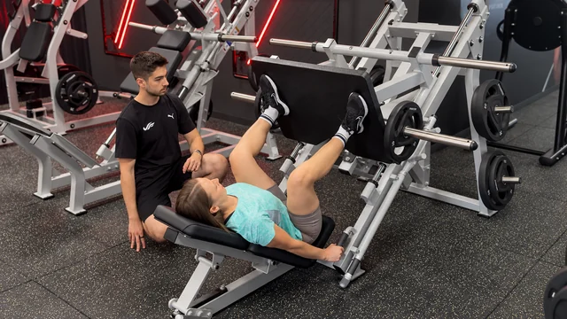

Victory Fitness · Békásmegyer
Fáj a térde, a dereka vagy a válla? Nem késő újra erősnek lenni.
Egyéni edzés sérülés, műtét vagy hosszabb kihagyás után. Biztonságosan, lépésről lépésre, és minden edzésen ott leszek Ön mellett.
- Az első beszélgetés ingyenes
- Csak Ön és az edző, nincs csoport
- Az Ön tempójában, kapkodás nélkül
Nézze meg ezt a rövid videót
Ebben elmondom, hogyan dolgozom, és mire számíthat az első alkalommal.
Itt lesz a bemutatkozó videó
Ismerős Önnek?
- Fáj vagy bizonytalan a térde, a csípője, a dereka vagy a válla.
- A lépcső, a guggolás vagy a bevásárlás cipelése nehezebb, mint régen.
- Az orvosa mozgást javasolt, de nem tudja, hogyan kezdjen hozzá.
- Fél, hogy rosszul mozdul, és megsérül.
- Az edzőteremben elveszettnek érzi magát.
Ha bármelyikre igent mondott, ez az oldal Önnek szól. Nincs egyedül, és nem késő elkezdeni.
Így dolgozunk együtt
Először meghallgatom.
Megkérdezem, mi fáj, mi esik nehezére, és mit szeretne újra könnyedén csinálni.
Az Ön tempójában haladunk.
Egyszerű, biztonságos gyakorlatokkal kezdünk. Csak akkor nehezítünk, ha az előző már jól megy.
Minden edzésen ott vagyok Ön mellett.
Megmutatom a gyakorlatot, figyelem, hogyan mozog, és érthetően elmondom, mit miért csinálunk.
Figyelembe veszem az orvosi javaslatot.
Ha orvosa vagy gyógytornásza kereteket adott, azokon belül építjük fel az edzést.

Mit érhetünk el együtt?
A célt mindig közösen tűzzük ki. Sokan például azt szeretnék, hogy:
- könnyebben menjen a lépcső,
- biztosabb legyen az egyensúlyuk,
- erősebb legyen a hátuk és a lábuk,
- újra élvezzék a sétát, a kirándulást vagy a kertészkedést,
- magabiztosabban mozogjanak a mindennapokban.
Fontos, hogy tudja
Személyi edző vagyok, nem orvos és nem gyógytornász. Nem állítok fel diagnózist, és az edzés nem helyettesíti az orvosi kezelést vagy a gyógytornát.
Friss sérülés, erős fájdalom vagy tisztázatlan panasz esetén kérem, először forduljon orvoshoz. Műtét után akkor kezdünk, amikor orvosa engedélyezte a terhelést.
Ki vagyok én?
Mihály Bence vagyok, személyi edző Békásmegyeren.
IWI személyi edző és fitness instruktor vagyok. 2026-ban elvégeztem az IWI MES Trainer képzést, amely a rehabilitációs és speciális célcsoportok edzésére készít fel.
Számomra az a legfontosabb, hogy Ön biztonságban érezze magát, és mindig értse, mit miért csinálunk.
Így kezdhetünk
Foglaljon időpontot, vagy hívjon fel.
Az első beszélgetés ingyenes, kb. 20 perc, online vagy személyesen.
Megbeszéljük, mire van szüksége.
Elmondja, mi zavarja, én pedig azt, hogyan tudnék segíteni. Ez semmire nem kötelezi.
Elkezdjük az első edzést.
Ha úgy dönt, együtt folytatjuk a Victory Fitness Békásmegyer edzőteremben.
Mennyibe kerül, és hol?
Az első beszélgetés: ingyenes
10 000 Ft / edzés
Egy edzés 60 perc. A terembelépőt külön kell fizetni.
Sokallja az árat?
Ne ez tartsa vissza! Hívjon fel bátran, és megbeszéljük, mi fér bele az Ön keretébe.
- Ha hetente többször jön, kedvezőbb árat adok.
- Ha szűkebb a keret, akár heti egy alkalommal is elkezdhetjük.
Victory Fitness Békásmegyer
1039 Budapest, Hatvany Lajos utca 10.
Gyakori kérdések
Soha nem jártam edzőteremben. Elkezdhetem?
Igen. Az első alkalommal mindent megmutatok, a gépeket és a gyakorlatokat is. Senki nem várja el, hogy bármit tudjon előre.
Nincs jó erőnlétem. Nem leszek kevés?
Nem. Onnan indulunk, ahol most tart. Az edzést igazítjuk Önhöz, nem Önnek kell az edzéshez igazodnia.
Volt műtétem vagy sérülésem. Elkezdhetem?
Ha orvosa engedélyezte a terhelést, igen. Az orvosi vagy gyógytornászi javaslatot figyelembe véve, óvatosan építjük fel az edzést. Friss sérülésnél először orvoshoz kell fordulni.
Egyedül leszek az edzővel?
Igen. Ez egyéni edzés: az egész óra alatt csak Önre figyelek.
Mit vigyek az első edzésre?
Kényelmes ruhát, tiszta váltócipőt, törölközőt és vizet. Minden mást a helyszínen megbeszélünk.
Tegye meg az első lépést még ma.
Egy kötetlen, ingyenes beszélgetéssel kezdünk. Utána Ön dönt.
Ha épp edzést tartok, és nem tudom felvenni, visszahívom.
Emailben is írhat: mihaly.bence.fitness@gmail.com